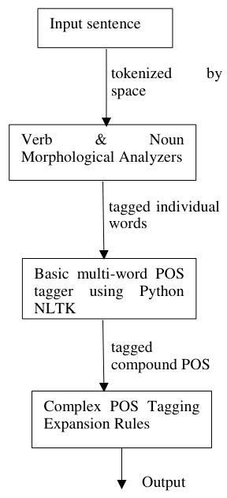

RAIL 2020Original text
Complex Setswana Parts of Speech Tagging
This is the original text of the paper. Translations are linked above.
Proceedings of the first workshop on Resources for African Indigenous Languages.
Original text, shown under its licence (CC BY-NC 4.0). Reuse allowed with attribution, non-commercial only. The translations on this site are by Ernst van Gassen (Arktos AI Lab).
Plain text for reuse, with its licence: English · LICENSE
Affiliations
Malema, G. Tebalo, B. Okgetheng, B. Motlhanka, M. Rammidi G.
University of Botswana
P/Bag 704, Gaborone, Botswana
E-mail addresses removed for privacy. They are in the original PDF.
Abstract
Setswana language is one of the Bantu languages written disjunctively. Some of its parts of speech such as qualificatives and some adverbs are made up of multiple words. That is, the part of speech is made up of a group of words. The disjunctive style of writing poses a challenge when a sentence is tokenized or when tagging. A few studies have been done on identification of multi-word parts of speech. In this study we go further to tokenize complex parts of speech which are formed by extending basic forms of multi-word parts of speech. The parts of speech are extended by recursively concatenating more parts of speech to a basic form of parts of speech. We developed rules for building complex relative parts of speech. A morphological analyzer and Python NLTK are used to tag individual words and basic forms of multi-word parts of speech respectively. Developed rules are then used to identify complex parts of speech. Results from a 300 sentence text files give a performance of 74%. The tagger fails when it encounters expansion rules not implemented and when tagging by the morphological analyzer is incorrect.
Keywords
parts of speech tagging, Setswana, qualificatives
1. Introduction
Setswana is a Bantu language spoken by about 4.4 million people in Southern Africa covering Botswana, where it is the national and majority language, Namibia, Zimbabwe and South Africa. The majority of speakers, about 3.6 million, live in South Africa, where the language is officially recognized. Setswana is closely related to Southern and Northern Sotho languages spoken in South Africa. There have been few attempts in the development of Setswana language processing tools such as part of speech tagger, spell checkers, grammar checkers and machine translation.
Setswana like other languages is faced with ambiguity problems as far as word usage is concerned and this has much impact in part of speech (POS) tagging. Text in the available resource Setswana corpus is not annotated and hence limited meaningful processing can be executed on the data in its current form. Setswana as a low resourced language is limiting corpus research pertaining to much needed significant amount of information about a word and its neighbours, useful in further development of other applications such as information retrieval, collocation and frequency analysis, machine translation and speech synthesis, among other NLP applications. Therefore, there is need to develop basic Setswana processing tools that are accurate and usable to other systems.
Parts of speech tagging identifies parts of speech for a given language in a sentence. The output of a POS tagger is used for other application such as machine learning, grammar checking and also for language analysis. The complexity of POS tagging varies from language to language. There are different approaches to part of speech tagging, the most prominent being statistical and rule-based approaches (Brants 2000, Brill 1992,1995 and Charniak 1997). Statistical approaches require test data to learn words formations and order in a language. They work well where adequate training data is readily available. We could not find a readily available tagged corpus to use. We therefore developed a rule based approach. Rule based techniques require the development of rules based on the language structure.
Setswana like some Bantu languages is written disjunctively. That is, words that together play a particular function in a sentence are written separately. For the sentence to be properly analysed such words have to be grouped together to give the intended meaning. There are several orthographic words in Setswana such as concords which alone do not have meaning but with other words they give the sentence its intended meaning. Some of these words also play multiple roles in sentences and are frequently used. Such 'words' includes include a, le, ba, se, lo, mo, ga, fa, ka. Without grouping the words, some words could be classified in multiple categories. This problem has been looked at as a tokenization problem in some studies (Faaß et al 2009, Pretorius et al 2009 and Talajard and Bosch 2006)
Setswana parts of speech include verbs, nouns, qualificatives, adverbs and pronouns. Verbs and nouns are open classes and could take several forms. Studies in parts of speech tagging have concentrated on copulative and auxiliary verbs and nouns because of this (Faaß et al 2009 and Pretorius et al 2009). Most of POS taggers have focused on tagging individual words. However, Setswana has POS in particular qualificatives and some adverbs that are made up of several words and in some cases about a dozen words (Cole 1955, Mogapi 1998 and Malema et al 2017). Setswana qualificatives include possessives, adjectives, relatives, enumeratives and quantitatives. Adverbs are of time, manner and location.
A few studies have been done on tokenization and parts of speech tagging for Setswana and Northern Sotho which is closely related to Setswana (Faaß et al 2009 and Malema et al 2017). These studies have not covered tokenization of complex parts of speech. Adverbs, possessives and relatives have a recursive structure which allows them to be extended resulting in complex structures containing several POS. Complex in this case, we mean in terms of length and use of multiple POS to build one part of speech.
This paper investigates identification of Setswana complex qualificatives and adverbs using part of speech tagger. We present basic rules on how to identify complex POS such as adverbs, possessives and relatives. The proposed method tags single words and then builds complex tags based on developed expansion rules. The rules have been tested for relatives and preliminary results show that most rules are consistent and work most of the time.
2. Setswana Complex POS
As stated above adverbs, possessives and relatives have a recursive structure that allow a simple POS to be extended into a complex POS. We have noted that in Setswana sentence structures, the verb can be followed by noun (object) or an adverb as also stated in the structure of Setswana noun and verb phrases (Letsholo and Matlhaku 2014). We have also noted that nouns could be followed by qualificatives. Thus a simple sentence could be expanded by stating the object the verb is acting on and how, where and when the verb action is performed. The object could be described by using qualificatives and demonstratives.
Examples:
mosimane o a kgweetsa (the boy is driving) mosimane o kgweetsa koloi (the boy is driving a car) mosimane o kgweetsa koloi ya rraagwe (the boy is driving his father's car) mosimane o kgweetsa koloi ya rraagwe kwa tirong ( the boy is driving his father's car at work)
The first sentence does not have an object. In the second sentence an object (koloi/car) is provided for the verb kgweetsa(drive). In the third sentence, the object koloi is distinguished or modified by using the possessive 'ya rraagwe' (his father's). In the fourth sentence an adverb of place (kwa tirong/at work) is added to identify where the action (kgweetsa/drive) of driving is happening.
We have observed that possessives, relatives and adverbs have a recursive structure and therefore could be expanded using other POS to create a complex POS.
2.1 Possessives
Simple possessives are made up a concord followed by a noun, pronoun or demonstrative.
Examples:
kgomo ya kgosi (chief's cow) kgomo ya bone (their cow)
In the first example above "ya kgosi" is the possessive, where ya is the possessive concord matching the noun class (class 9) of kgomo(cow) and kgosi(chief) is the root (noun in this case).
This is the simplest form of the possessive. However, the root can be expanded to form a complex possessive. The root can be other compound POS such as relatives, possessives, adjectives and adverbs. These compound roots could also be expanded using the sentence expansion rules as explained above. That is, if POS ends with a verb, the verb can be given an object and or an adverb in front of it and if the POS ends with a noun, the noun can be modified with a qualificative and or a demonstrative. The added POS could also be expanded in the same way recursively. Examples:
koloi ya monna (the man's car) koloi ya ntate yo o thudileng ( the car that belongs to the man who had an accident) koloi ya ntate yo o thudileng tonki (the car that belongs to the man who hit a donkey) koloi ya ntate yo o thudileng tonki ya kgosi (the car that belongs to the man who hit the chief's donkey) koloi ya ntate yo o thudileng tonki ya kgosi kwa morakeng (the car that belongs to the man who hit the chief's donkey at the cattle post)
In the first sentence ya monna, is just the possessive concord and a simple root (monna/noun). The second sentence expands the possessive by distinguishing the monna(man) with the relative, yo o thudileng. Since that relative ends with a verb we could give it an object, tonki (donkey) as done in the third sentence. The fourth sentence distinguishes the donkey(tonki) using another possessive, ya kgosi. The firth sentence adds an adverb of place, kwa morakeng (at the cattle post), for the verb thudileng (hit). Further expansion of the possessive could be done by providing objects and or adverbs for new verbs and modifying new nouns with qualificatives or demonstratives. In the last sentence "ya ntate yo o thudileng tonki ya kgosi kwa morakeng" is a possessive describing the noun koloi. This possessive is made up of a relative (yo o thudileng), noun (tonki), possessive (ya kgosi) and adverb (kwa morakeng). The main objective of this study is to develop ways to recognize such long/complex parts of speech.
2.2 Relatives
Relatives are made up of a concord and a root. Example:
koloi e e thudileng (the car that had an accident)
e e thudileng is a relative, where e e is a relative concord for class 4 and 9 nouns and thudileng is the root. Using the same approach for expansion of verbs and noun we could expand this relative as follows.
koloi e e thudileng tonki (the car that hit a donkey) koloi e e thudielng tonki ya kgosi (the car that hit the chief's donkey) koloi e e thudileng tonki ya kgosi kwa morakeng (the car that hit the chief's car at the cattle post)
In the third example "e e thudileng tonki ya kgosi kwa morakeng" is a relative made up of a basic relative (e e thudileng), noun (tonki), possessive (ya kgosi) and adverb (kwa morakeng). The structure of examples above is referred to as direct relatives. Another category of relatives is known as indirect. Examples:
koloi e ba e ratang (the car they like) koloi e a tla e rekang (the car she/he will buy) ngwana yo Modimo a mo segofaditseng ( the child that God blessed) koloi
In this study we only looked at direct relatives which have a simpler structure compared to indirect relatives. Basic structures of Setswana qualificatives and adverbs could be found in (Cole 1955 and Mogapi 1998).
2.3 Adverbs
Adverbs could also be expanded when they use verbs and nouns. Examples:
kwa morakeng (at the cattle post) kwa morakeng wa monna (at the man's cattle post) kwa morakeng wa monna yo o berekang (at the cattle post of the man who is working) kwa morakeng wa monna yo o berekang kwa sepateleng (at the cattle post of the man who is working at the hospital) kwa morakeng wa monna yo o berekang kwa sepateleng sa Gaborone (at the cattle post of the man who is working at Gaborone hospital)
The last example is an adverb made up of a basic adverb (kwa morakeng), possessive (wa monna), relative (yo o berekang), adverb (kwa sepateleng), possessive (sa Gaborone)
3. Implementation
Figure 1 below shows a block diagram of the proposed tagger. Individual words are first tagged using morphological and noun analyzers developed in Malema et al (2016 and 2018). Simple compound POS are then tagged using regular expression (RE) Python library from Python NLTK. Regular expressions for simple compound POS are used here. We developed regular expressions for adjectives, enumeratives and for basic forms of possessives, relatives and adverbs. In Malema (2017) a finite state approach was used to tag basic multi-word POS. In this study we used the Python NLTK regular expression library because it is faster and much easier to use. After identifying compound POS in a sentence, expansion rules are applied to each compound POS for possible expansion. These rules basically test whether the next word(s) could be part of the current POS.

Figure 1: Block diagram of POS tagger
4. Performance Results
The proposed parts of speech tagger focused on complex direct relatives ending with a verb. The rule extensions developed are adding a noun, pronoun, qualificative, demonstrative or an adverb.
Examples:
ngwana yo o ratang (a child who likes …) ngwana yo o ratang go lela (a child who likes crying) ngwana yo o ratang dijo (a child who likes food) ngwana yo o ratang dijo tse di sukiri (a child who likes sweet food) ngwana yo o ratang dijo tsele (a child who likes that food)
And so forth.
As the examples show we focused on the basic structure of direct relatives which is Relative concord + Verb-ng. This structure could be extended in a variety of ways
Concord + Verb-ng + N
Concord + verb-ng + T
Concord + verb-ng + P
Concord + verb-ng + D
Concord + verb-ng + Q
Concord + verb-ng + L
Where N is noun, T is a qualificative, P is a pronoun, D is a demonstrative, Q is a quantitative and L is an adverb. The prototype tagger was given a 300 sentence text file from the Botswana Daily News (2019) and Mmegi (2019). The text file contains 123 relatives, 37 of which are of the basic form and the rest are more complex. The proposed tagger identified all the 123 basic relatives and successfully extended 64 of the complex relatives resulting with a success rate of 74%. The two main factors that lead to the failure of the tagger are:
Unexhausted Relative forms:
We noted that there are other forms that we have not included in this structure. For example, we noted that there are forms in which the verb is followed by 'ke' and 'le' which are not in our rules. Examples:
yo o salang le ngwana ( the one who is baby sitting) yo o rutwang ke mmaagwe (the one taught by his/her mother)
Failure of basic word tagging:
In some cases the morphological analyzer failed to tag verbs, nouns and adverbs(single word) properly which affected the regular expression tagger and the expansion rule application. Also in some cases nouns were not put in their correct classes. The concord(s) of a qualificative modifying a particular noun has to match with its noun class.
5. Conclusions
In this paper we presented a rule based approach to identifying Setswana complex parts of speech. The idea is to implement the recursive structure of complex parts of speech. The recursive structure is expressed in the form of rules which are based on simple verb and noun phrase structures. A prototype tagger was developed with the help of Python NLTK regular expressions. Preliminary results show that the proposed technique works well. However, for it to be effective, all the rules and structures of complex POS must be documented. In this study we did not exhaust all relative structures. We plan to develop the idea further by developing more rules and include other parts of speech.
6. Bibliographical References
Botswana Daily News (online), www.dailynews.gov.bw
Brants T (2000). A statistical part of speech tagger. PANCL'00 Proceedings of the sixth conference on applied natural language processing Association for Computational Linguistics
Brill E (1992). A simple rule based part of speech tagger. In Proceedings of the third conference on Applied Natural Language processing, ACL, Trento, Italy
Brill E (1995). Transformation Based Error-Driven Learning and Natural language Processing: A case study in Part of Speech Tagging. Computational Linguistics
Charniak E (1997).Statistical techniques for Natural Language parsin. AI Magazine, 18(4), pp.33-44
Cole, D.T. (1955). An Introduction to Tswana grammar. Longmans and Green, Cape Town.
Faaß G, Heid U, Taljard E & Prinsloo D (2009). Part-of_Speech tagging of Northern Sotho: Disambiguating polysemous function words",Proceedings of the EACL, 2009 Workshop on Language Technologies for African Languages - Aflat 2009, pages 38-45, Athens Greece, 31 March 2009
Lombard, D.P (1985). Introduction to the Grammar of Northern Sotho. J.L. van Schaik, Pretoria, South Africa, 1985.
Louwrens, L. J.(1991). Aspects of the Northern Sotho Grammar. Via Afrika, Pretoria, South Africa.
Mmegi Publishing News paper (online: www.mmegi.co.bw
Malema, G, Okgetheng, B and Motlhanka, M. (2017) Setswana Part of Speech Tagging, International Journal of Natural Language Computing (IJNLC), Vol.6, No.6, pp. 15 - 20, December 2017
Malema, G. Motlogelwa, N. Okgetheng, B. Mogotlhwane O. (2016). Setswana Verb Analyzer and Generator. International Journal of Computational Linguistics (IJCL), Vol 7, issue 1, 2016.
Malema, G. Motlhanka, M. Okgetheng, O and Motlogelwa, N. (2018). Setswana Noun Analyzer and Generator. International Journal of Computational Linguistics (IJCL), Volume (9), Issue (2) pp 32-40, 2018
Mogapi, K.(1998). Thuto Puo ya Setswana, Longman Botswana, 184, ISBN:0582 61903 3.
Pretorius L, Viljoen B, Pretorius R and Berg A.(2009). A finite state approach to Setswana verb morphology, International Workshop on finite state methods and natural Language Processing FSMNLP 2009: Finite State Methods and Natural language Processing, pp. 131 - 138
Taljard, E. & Bosch, S. E. (2006). A comparison of approaches towards word class tagging: Disjunctively versus conjunctively written Bantu languages. Nordic Journal of African Studies, 15(4), 428-442.
Complex Setswana Parts of Speech Tagging
Étiquetage complexe des parties du discours en Setswana
Affiliations
Malema, G. Tebalo, B. Okgetheng, B. Motlhanka, M. Rammidi G.
University of Botswana
P/Bag 704, Gaborone, Botswana
,
Affiliations
Malema, G. Tebalo, B. Okgetheng, B. Motlhanka, M. Rammidi G.
University of Botswana
P/Bag 704, Gaborone, Botswana
,
Abstract
Résumé
Setswana language is one of the Bantu languages written disjunctively. Some of its parts of speech such as qualificatives and some adverbs are made up of multiple words. That is, the part of speech is made up of a group of words. The disjunctive style of writing poses a challenge when a sentence is tokenized or when tagging. A few studies have been done on identification of multi-word parts of speech. In this study we go further to tokenize complex parts of speech which are formed by extending basic forms of multi-word parts of speech. The parts of speech are extended by recursively concatenating more parts of speech to a basic form of parts of speech. We developed rules for building complex relative parts of speech. A morphological analyzer and Python NLTK are used to tag individual words and basic forms of multi-word parts of speech respectively. Developed rules are then used to identify complex parts of speech. Results from a 300 sentence text files give a performance of 74%. The tagger fails when it encounters expansion rules not implemented and when tagging by the morphological analyzer is incorrect.
La langue setswana est l'une des langues bantoues écrites de manière disjonctive. Certaines de ses parties de discours telles que les qualificatifs et certains adverbes sont constitués de plusieurs mots. C'est-à-dire que la partie du discours est composée d'un groupe de mots. Le style d'écriture disjonctif pose un défi lors de la tokenisation d'une phrase ou lors de l'étiquetage. Quelques études ont été faites sur l'identification des parties du discours multi-mots. Dans cette étude, nous allons plus loin pour tokeniser des parties du discours complexes qui sont formées en étendant des formes de base de parties du discours multi-mots. Les parties du discours sont étendues en concaténant récursivement plus de parties du discours à une forme de base des parties du discours. Nous avons développé des règles pour construire des parties du discours relatives complexes. Un analyseur morphologique et Python NLTK sont utilisés pour marquer les mots individuels et les formes de base des parties du discours multi-mots respectivement. Les règles élaborées sont ensuite utilisées pour identifier les parties complexes du discours. Les résultats de fichiers de texte de 300 phrases donnent une performance de 74 %. L'étiqueteur échoue lorsqu'il rencontre des règles d'expansion non implémentées et lorsque l'étiquetage par l'analyseur morphologique est incorrect.
Keywords
Mots-clés
parts of speech tagging, Setswana, qualificatives
étiquetage des parties du discours, Setswana, qualificatifs
1. Introduction
1. Introduction
Setswana is a Bantu language spoken by about 4.4 million people in Southern Africa covering Botswana, where it is the national and majority language, Namibia, Zimbabwe and South Africa. The majority of speakers, about 3.6 million, live in South Africa, where the language is officially recognized. Setswana is closely related to Southern and Northern Sotho languages spoken in South Africa. There have been few attempts in the development of Setswana language processing tools such as part of speech tagger, spell checkers, grammar checkers and machine translation.
Le setswana est une langue bantoue parlée par environ 4,4 millions de personnes en Afrique australe couvrant le Botswana, où il est la langue nationale et majoritaire, la Namibie, le Zimbabwe et l'Afrique du Sud. La majorité des locuteurs, environ 3,6 millions, vivent en Afrique du Sud, où la langue est officiellement reconnue. Le setswana est étroitement lié aux langues sotho du sud et du nord parlées en Afrique du Sud. Il y a eu peu de tentatives de développement d'outils de traitement de la langue setswana tels que les étiqueteurs de catégories grammaticales, les correcteurs orthographiques, les correcteurs grammaticaux et la traduction automatique.
Setswana like other languages is faced with ambiguity problems as far as word usage is concerned and this has much impact in part of speech (POS) tagging. Text in the available resource Setswana corpus is not annotated and hence limited meaningful processing can be executed on the data in its current form. Setswana as a low resourced language is limiting corpus research pertaining to much needed significant amount of information about a word and its neighbours, useful in further development of other applications such as information retrieval, collocation and frequency analysis, machine translation and speech synthesis, among other NLP applications. Therefore, there is need to develop basic Setswana processing tools that are accurate and usable to other systems.
Le setswana, comme d'autres langues, est confronté à des problèmes d'ambiguïté en ce qui concerne l'usage des mots, ce qui a un impact considérable sur l'étiquetage des catégories grammaticales (POS). Le texte dans la ressource disponible du corpus Setswana n’est pas annoté et, par conséquent, un traitement significatif limité peut être exécuté sur les données sous leur forme actuelle. Le setswana, en tant que langue à faibles ressources, limite la recherche sur corpus portant sur la quantité significative d'informations, pourtant très nécessaire, concernant un mot et ses voisins, utile au développement ultérieur d'autres applications telles que la recherche d'information, l'analyse de collocations et de fréquences, la traduction automatique et la synthèse vocale, parmi d'autres applications de TAL. Par conséquent, il est nécessaire de développer des outils de traitement de base du Setswana qui sont précis et utilisables par d'autres systèmes.
Parts of speech tagging identifies parts of speech for a given language in a sentence. The output of a POS tagger is used for other application such as machine learning, grammar checking and also for language analysis. The complexity of POS tagging varies from language to language. There are different approaches to part of speech tagging, the most prominent being statistical and rule-based approaches (Brants 2000, Brill 1992,1995 and Charniak 1997). Statistical approaches require test data to learn words formations and order in a language. They work well where adequate training data is readily available. We could not find a readily available tagged corpus to use. We therefore developed a rule based approach. Rule based techniques require the development of rules based on the language structure.
L'étiquetage des parties du discours identifie les parties du discours pour une langue donnée dans une phrase. La sortie d'un marqueur POS est utilisée pour d'autres applications telles que l'apprentissage automatique, la vérification de la grammaire et aussi pour l'analyse du langage. La complexité de l'étiquetage POS varie d'une langue à l'autre. Il existe différentes approches de l'étiquetage morpho-syntaxique, les plus importantes étant les approches statistiques et à base de règles (Brants 2000, Brill 1992,1995 et Charniak 1997). Les approches statistiques nécessitent des données de test pour apprendre les formations et l'ordre des mots dans une langue. Elles fonctionnent bien lorsque des données d'entraînement adéquates sont facilement disponibles. Nous n'avons pas trouvé de corpus étiqueté facilement disponible à utiliser. Nous avons donc développé une approche basée sur des règles. Les techniques basées sur des règles nécessitent le développement de règles basées sur la structure de la langue.
Setswana like some Bantu languages is written disjunctively. That is, words that together play a particular function in a sentence are written separately. For the sentence to be properly analysed such words have to be grouped together to give the intended meaning. There are several orthographic words in Setswana such as concords which alone do not have meaning but with other words they give the sentence its intended meaning. Some of these words also play multiple roles in sentences and are frequently used. Such 'words' includes include a, le, ba, se, lo, mo, ga, fa, ka. Without grouping the words, some words could be classified in multiple categories. This problem has been looked at as a tokenization problem in some studies (Faaß et al 2009, Pretorius et al 2009 and Talajard and Bosch 2006)
Le setswana, comme certaines langues bantoues, est écrit de manière disjonctive. C'est-à-dire que les mots qui jouent ensemble une fonction particulière dans une phrase sont écrits séparément. Pour que la phrase soit correctement analysée, ces mots doivent être regroupés pour donner le sens voulu. Il existe plusieurs mots orthographiques en setswana, tels que les accords, qui, seuls, n'ont pas de sens, mais avec d'autres mots, ils donnent à la phrase son sens voulu. Certains de ces mots jouent également plusieurs rôles dans les phrases et sont fréquemment utilisés. De tels « mots » incluent a, le, ba, se, lo, mo, ga, fa, ka. Sans grouper les mots, certains mots pourraient être classés en plusieurs catégories. Ce problème a été considéré comme un problème de tokenisation dans certaines études (Faaß et al 2009, Pretorius et al 2009 et Talajard et Bosch 2006).
Setswana parts of speech include verbs, nouns, qualificatives, adverbs and pronouns. Verbs and nouns are open classes and could take several forms. Studies in parts of speech tagging have concentrated on copulative and auxiliary verbs and nouns because of this (Faaß et al 2009 and Pretorius et al 2009). Most of POS taggers have focused on tagging individual words. However, Setswana has POS in particular qualificatives and some adverbs that are made up of several words and in some cases about a dozen words (Cole 1955, Mogapi 1998 and Malema et al 2017). Setswana qualificatives include possessives, adjectives, relatives, enumeratives and quantitatives. Adverbs are of time, manner and location.
Les parties de discours setswana comprennent des verbes, des noms, des qualificatifs, des adverbes et des pronoms. Les verbes et les noms sont des classes ouvertes et peuvent prendre plusieurs formes. Les études sur le marquage des parties du discours se sont concentrées sur les verbes copulatifs et auxiliaires et les noms pour cette raison (Faaß et al 2009 et Pretorius et al 2009). La plupart des taggers POS se sont concentrés sur le marquage des mots individuels. Cependant, Setswana a POS en particulier qualificatifs et certains adverbes qui sont constitués de plusieurs mots et dans certains cas d'une douzaine de mots (Cole 1955, Mogapi 1998 et Malema et al 2017). Les qualificatifs setswana comprennent les possessifs, les adjectifs, les relatifs, les énumératifs et les quantitatifs. Les adverbes sont de temps, de manière et de lieu.
A few studies have been done on tokenization and parts of speech tagging for Setswana and Northern Sotho which is closely related to Setswana (Faaß et al 2009 and Malema et al 2017). These studies have not covered tokenization of complex parts of speech. Adverbs, possessives and relatives have a recursive structure which allows them to be extended resulting in complex structures containing several POS. Complex in this case, we mean in terms of length and use of multiple POS to build one part of speech.
Quelques études ont été réalisées sur la tokenisation et l'étiquetage des parties du discours pour le Setswana et le Sotho du Nord, qui est étroitement lié au Setswana (Faaß et al 2009 et Malema et al 2017). Ces études n'ont pas couvert la tokenisation des parties complexes du discours. Les adverbes, les possessifs et les relatifs ont une structure récursive qui leur permet de s'étendre, résultant en des structures complexes contenant plusieurs POS. Par complexe, dans ce cas, nous entendons en termes de longueur et d'utilisation de plusieurs POS pour construire une partie du discours.
This paper investigates identification of Setswana complex qualificatives and adverbs using part of speech tagger. We present basic rules on how to identify complex POS such as adverbs, possessives and relatives. The proposed method tags single words and then builds complex tags based on developed expansion rules. The rules have been tested for relatives and preliminary results show that most rules are consistent and work most of the time.
Cet article examine l'identification des qualificatifs et adverbes complexes du setswana à l'aide d'un étiqueteur de catégories grammaticales. Nous présentons des règles de base sur la façon d'identifier les POS complexes tels que les adverbes, les possessifs et les relatifs. La méthode proposée étiquette les mots individuels puis construit des étiquettes complexes basées sur des règles d'expansion développées. Les règles ont été testées pour les relatifs et les résultats préliminaires montrent que la plupart des règles sont cohérentes et fonctionnent la plupart du temps.
2. Setswana Complex POS
2. POS complexe en Setswana
As stated above adverbs, possessives and relatives have a recursive structure that allow a simple POS to be extended into a complex POS. We have noted that in Setswana sentence structures, the verb can be followed by noun (object) or an adverb as also stated in the structure of Setswana noun and verb phrases (Letsholo and Matlhaku 2014). We have also noted that nouns could be followed by qualificatives. Thus a simple sentence could be expanded by stating the object the verb is acting on and how, where and when the verb action is performed. The object could be described by using qualificatives and demonstratives.
Comme indiqué ci-dessus, les adverbes, les possessifs et les relatifs ont une structure récursive qui permet à un simple POS d'être étendu en un POS complexe. Nous avons noté que dans les structures de phrases en Setswana, le verbe peut être suivi d'un nom (objet) ou d'un adverbe, comme également indiqué dans la structure des phrases nominales et verbales en Setswana (Letsholo et Matlhaku 2014). Nous avons également noté que les noms peuvent être suivis de qualificatifs. Ainsi, une phrase simple peut être étendue en indiquant l'objet sur lequel le verbe agit et comment, où et quand l'action verbale est effectuée. L'objet pourrait être décrit en utilisant des qualificatifs et des démonstratifs.
Examples:
Exemples :
mosimane o a kgweetsa (the boy is driving) mosimane o kgweetsa koloi (the boy is driving a car) mosimane o kgweetsa koloi ya rraagwe (the boy is driving his father's car) mosimane o kgweetsa koloi ya rraagwe kwa tirong ( the boy is driving his father's car at work)
mosimane o a kgweetsa (le garçon conduit) mosimane o kgweetsa koloi (le garçon conduit une voiture) mosimane o kgweetsa koloi ya rraagwe (le garçon conduit la voiture de son père) mosimane o kgweetsa koloi ya rraagwe kwa tirong ( le garçon conduit la voiture de son père au travail)
The first sentence does not have an object. In the second sentence an object (koloi/car) is provided for the verb kgweetsa(drive). In the third sentence, the object koloi is distinguished or modified by using the possessive 'ya rraagwe' (his father's). In the fourth sentence an adverb of place (kwa tirong/at work) is added to identify where the action (kgweetsa/drive) of driving is happening.
La première phrase n'a pas d'objet. Dans la deuxième phrase, un objet (koloi/voiture) est fourni pour le verbe kgweetsa (conduire). Dans la troisième phrase, l'objet koloi est distingué ou modifié en utilisant le possessif 'ya rraagwe' (de son père). Dans la quatrième phrase, un adverbe de lieu (kwa tirong / au travail) est ajouté pour identifier où l'action (kgweetsa / drive) de la conduite se passe.
We have observed that possessives, relatives and adverbs have a recursive structure and therefore could be expanded using other POS to create a complex POS.
Nous avons observé que les possessifs, les relatifs et les adverbes ont une structure récursive et pourraient donc être étendus en utilisant d'autres POS pour créer un POS complexe.
2.1 Possessives
2.1 Les possessifs
Simple possessives are made up a concord followed by a noun, pronoun or demonstrative.
Les possessifs simples sont constitués d'un accord suivi d'un nom, d'un pronom ou d'un démonstratif.
Examples:
Exemples :
kgomo ya kgosi (chief's cow) kgomo ya bone (their cow)
In the first example above "ya kgosi" is the possessive, where ya is the possessive concord matching the noun class (class 9) of kgomo(cow) and kgosi(chief) is the root (noun in this case).
Dans le premier exemple ci-dessus, « ya kgosi » est le possessif, où ya est l'accord possessif correspondant à la classe nominale (classe 9) de kgomo(vache) et kgosi(chef) est la racine (nom dans ce cas).
This is the simplest form of the possessive. However, the root can be expanded to form a complex possessive. The root can be other compound POS such as relatives, possessives, adjectives and adverbs. These compound roots could also be expanded using the sentence expansion rules as explained above. That is, if POS ends with a verb, the verb can be given an object and or an adverb in front of it and if the POS ends with a noun, the noun can be modified with a qualificative and or a demonstrative. The added POS could also be expanded in the same way recursively. Examples:
Il s'agit de la forme la plus simple du possessif. Cependant, la racine peut être étendue pour former un possessif complexe. La racine peut être d'autres POS composés tels que les relatifs, les possessifs, les adjectifs et les adverbes. Ces racines composées pourraient également être élargies en utilisant les règles d'expansion de phrase comme expliqué ci-dessus. C'est-à-dire que si POS se termine par un verbe, le verbe peut avoir un objet et/ou un adverbe devant lui et si le POS se termine par un nom, le nom peut être modifié par un qualificatif et/ou un démonstratif. Le POS ajouté pourrait également être étendu de la même manière récursivement. Exemples :
koloi ya monna (the man's car) koloi ya ntate yo o thudileng ( the car that belongs to the man who had an accident) koloi ya ntate yo o thudileng tonki (the car that belongs to the man who hit a donkey) koloi ya ntate yo o thudileng tonki ya kgosi (the car that belongs to the man who hit the chief's donkey) koloi ya ntate yo o thudileng tonki ya kgosi kwa morakeng (the car that belongs to the man who hit the chief's donkey at the cattle post)
koloi ya monna (la voiture de l'homme) koloi ya ntate yo o thudileng ( la voiture qui appartient à l'homme qui a eu un accident) koloi ya ntate yo o thudileng tonki (la voiture qui appartient à l'homme qui a heurté un âne) koloi ya ntate yo o thudileng tonki ya kgosi (la voiture qui appartient à l'homme qui a heurté l'âne du chef) koloi ya ntate yo o thudileng tonki ya kgosi kwa morakeng (the car that belongs to the man who hit the chief's donkey at the cattle post)
In the first sentence ya monna, is just the possessive concord and a simple root (monna/noun). The second sentence expands the possessive by distinguishing the monna(man) with the relative, yo o thudileng. Since that relative ends with a verb we could give it an object, tonki (donkey) as done in the third sentence. The fourth sentence distinguishes the donkey(tonki) using another possessive, ya kgosi. The firth sentence adds an adverb of place, kwa morakeng (at the cattle post), for the verb thudileng (hit). Further expansion of the possessive could be done by providing objects and or adverbs for new verbs and modifying new nouns with qualificatives or demonstratives. In the last sentence "ya ntate yo o thudileng tonki ya kgosi kwa morakeng" is a possessive describing the noun koloi. This possessive is made up of a relative (yo o thudileng), noun (tonki), possessive (ya kgosi) and adverb (kwa morakeng). The main objective of this study is to develop ways to recognize such long/complex parts of speech.
Dans la première phrase ya monna, n'est que l'accord possessif et une racine simple (monna/nom). La deuxième phrase étend le possessif en distinguant le monna(homme) avec le relatif, yo o thudileng. Puisque ce relatif se termine par un verbe, nous pourrions lui donner un objet, tonki (âne) comme fait dans la troisième phrase. La quatrième phrase distingue l'âne (tonki) en utilisant un autre possessif, ya kgosi. La cinquième phrase ajoute un adverbe de lieu, kwa morakeng (au poste à bétail), pour le verbe thudileng (heurté). Une expansion supplémentaire du possessif pourrait être faite en fournissant des objets et ou des adverbes pour de nouveaux verbes et en modifiant de nouveaux noms avec des qualificatifs ou des démonstratifs. Dans la dernière phrase « ya ntate yo o thudileng tonki ya kgosi kwa morakeng » est un possessif décrivant le nom koloi. Ce possessif est composé d'un relatif (yo o thudileng), d'un nom (tonki), d'un possessif (ya kgosi) et d'un adverbe (kwa morakeng). L'objectif principal de cette étude est de développer des moyens de reconnaître de telles parties du discours longues/complexes.
2.2 Relatives
2.2 Relatifs
Relatives are made up of a concord and a root. Example:
Les relatifs sont constitués d'un accord et d'une racine. Exemple :
koloi e e thudileng (the car that had an accident)
e e thudileng is a relative, where e e is a relative concord for class 4 and 9 nouns and thudileng is the root. Using the same approach for expansion of verbs and noun we could expand this relative as follows.
e e thudileng est un relatif, où e e est un accord relatif pour les noms de classes 4 et 9 et thudileng est la racine. En utilisant la même approche pour l'expansion des verbes et des noms, nous pourrions développer ce relatif comme suit.
koloi e e thudileng tonki (the car that hit a donkey) koloi e e thudielng tonki ya kgosi (the car that hit the chief's donkey) koloi e e thudileng tonki ya kgosi kwa morakeng (the car that hit the chief's car at the cattle post)
koloi e e thudileng tonki (la voiture qui a heurté un âne) koloi e e thudielng tonki ya kgosi (la voiture qui a heurté l'âne du chef) koloi e e thudileng tonki ya kgosi kwa morakeng (la voiture qui a heurté la voiture du chef au poste à bétail)
In the third example "e e thudileng tonki ya kgosi kwa morakeng" is a relative made up of a basic relative (e e thudileng), noun (tonki), possessive (ya kgosi) and adverb (kwa morakeng). The structure of examples above is referred to as direct relatives. Another category of relatives is known as indirect. Examples:
Dans le troisième exemple, "e e thudileng tonki ya kgosi kwa morakeng" est une relative composée d'une relative de base (e e thudileng), d'un nom (tonki), d'un possessif (ya kgosi) et d'un adverbe (kwa morakeng). La structure des exemples ci-dessus est appelée relatives directes. Une autre catégorie de relatives est connue sous le nom de relatives indirectes. Exemples :
koloi e ba e ratang (the car they like) koloi e a tla e rekang (the car she/he will buy) ngwana yo Modimo a mo segofaditseng ( the child that God blessed) koloi
koloi e ba e ratang (la voiture qu'ils/elles aiment) koloi e a tla e rekang (la voiture qu'il/elle achètera) ngwana yo Modimo a mo segofaditseng ( l'enfant que Dieu a béni) koloi
In this study we only looked at direct relatives which have a simpler structure compared to indirect relatives. Basic structures of Setswana qualificatives and adverbs could be found in (Cole 1955 and Mogapi 1998).
Dans cette étude, nous n'avons examiné que les relatifs directs, qui ont une structure plus simple par rapport aux relatifs indirects. Les structures de base des qualificatifs et des adverbes en Setswana peuvent être trouvées dans (Cole 1955 et Mogapi 1998).
2.3 Adverbs
2.3 Adverbes
Adverbs could also be expanded when they use verbs and nouns. Examples:
Les adverbes pourraient également être étendus lorsqu'ils utilisent des verbes et des noms. Exemples :
kwa morakeng (at the cattle post) kwa morakeng wa monna (at the man's cattle post) kwa morakeng wa monna yo o berekang (at the cattle post of the man who is working) kwa morakeng wa monna yo o berekang kwa sepateleng (at the cattle post of the man who is working at the hospital) kwa morakeng wa monna yo o berekang kwa sepateleng sa Gaborone (at the cattle post of the man who is working at Gaborone hospital)
kwa morakeng (au poste à bétail) kwa morakeng wa monna (au poste à bétail de l'homme) kwa morakeng wa monna yo o berekang (au poste à bétail de l'homme qui travaille) kwa morakeng wa monna yo o berekang kwa sepateleng (au poste à bétail de l'homme qui travaille à l'hôpital) kwa morakeng wa monna yo o berekang kwa sepateleng sa Gaborone (au poste à bétail de l'homme qui travaille à l'hôpital de Gaborone)
The last example is an adverb made up of a basic adverb (kwa morakeng), possessive (wa monna), relative (yo o berekang), adverb (kwa sepateleng), possessive (sa Gaborone)
Le dernier exemple est un adverbe composé d'un adverbe de base (kwa morakeng), possessif (wa monna), relatif (yo o berekang), adverbe (kwa sepateleng), possessif (sa Gaborone)
3. Implementation
3. Mise en œuvre
Figure 1 below shows a block diagram of the proposed tagger. Individual words are first tagged using morphological and noun analyzers developed in Malema et al (2016 and 2018). Simple compound POS are then tagged using regular expression (RE) Python library from Python NLTK. Regular expressions for simple compound POS are used here. We developed regular expressions for adjectives, enumeratives and for basic forms of possessives, relatives and adverbs. In Malema (2017) a finite state approach was used to tag basic multi-word POS. In this study we used the Python NLTK regular expression library because it is faster and much easier to use. After identifying compound POS in a sentence, expansion rules are applied to each compound POS for possible expansion. These rules basically test whether the next word(s) could be part of the current POS.
La figure 1 ci-dessous montre un diagramme en blocs de l'étiqueteur proposé. Les mots individuels sont d'abord étiquetés à l'aide d'analyseurs morphologiques et nominaux développés dans Malema et al (2016 et 2018). Les POS composés simples sont ensuite étiquetés à l'aide de la bibliothèque Python d'expressions régulières (RE) de Python NLTK. Les expressions régulières pour les POS composés simples sont utilisées ici. Nous avons développé des expressions régulières pour les adjectifs, les énumératifs et pour les formes de base des possessifs, des relatifs et des adverbes. Dans Malema (2017), une approche à états finis a été utilisée pour étiqueter les POS multi-mots de base. Dans cette étude, nous avons utilisé la bibliothèque d'expressions régulières Python NLTK car elle est plus rapide et beaucoup plus facile à utiliser. Après avoir identifié les POS composés dans une phrase, des règles d'expansion sont appliquées à chaque POS composé pour une expansion possible. Ces règles testent essentiellement si le(s) mot(s) suivant(s) pourrait(ent) faire partie du POS actuel.
Figure 1: Block diagram of POS tagger
Figure 1 : Schéma fonctionnel de l'étiqueteur morphosyntaxique
4. Performance Results
4. Résultats de performance
The proposed parts of speech tagger focused on complex direct relatives ending with a verb. The rule extensions developed are adding a noun, pronoun, qualificative, demonstrative or an adverb.
L'étiqueteur de parties du discours proposé s'est concentré sur les relatifs directs complexes se terminant par un verbe. Les extensions de règles développées ajoutent un nom, un pronom, un qualificatif, un démonstratif ou un adverbe.
Examples:
Exemples :
ngwana yo o ratang (a child who likes …) ngwana yo o ratang go lela (a child who likes crying) ngwana yo o ratang dijo (a child who likes food) ngwana yo o ratang dijo tse di sukiri (a child who likes sweet food) ngwana yo o ratang dijo tsele (a child who likes that food)
ngwana yo o ratang (un enfant qui aime …) ngwana yo o ratang go lela (un enfant qui aime pleurer) ngwana yo o ratang dijo (un enfant qui aime la nourriture) ngwana yo o ratang dijo tse di sukiri (un enfant qui aime la nourriture sucrée) ngwana yo o ratang dijo tsele (un enfant qui aime cette nourriture)
And so forth.
Et ainsi de suite.
As the examples show we focused on the basic structure of direct relatives which is Relative concord + Verb-ng. This structure could be extended in a variety of ways
Comme le montrent les exemples, nous nous sommes concentrés sur la structure de base des relatives directes qui est Relative concord + Verb-ng. Cette structure pourrait être étendue de diverses manières
Concord + Verb-ng + N
Concord + Verbe-ng + N
Concord + verb-ng + T
Concord + verbe-ng + T
Concord + verb-ng + P
Concord + verbe-ng + P
Concord + verb-ng + D
Concord + verbe-ng + D
Concord + verb-ng + Q
Concord + verbe-ng + Q
Concord + verb-ng + L
Concord + verbe-ng + L
Where N is noun, T is a qualificative, P is a pronoun, D is a demonstrative, Q is a quantitative and L is an adverb. The prototype tagger was given a 300 sentence text file from the Botswana Daily News (2019) and Mmegi (2019). The text file contains 123 relatives, 37 of which are of the basic form and the rest are more complex. The proposed tagger identified all the 123 basic relatives and successfully extended 64 of the complex relatives resulting with a success rate of 74%. The two main factors that lead to the failure of the tagger are:
Où N est un nom, T est un qualificatif, P est un pronom, D est un démonstratif, Q est un quantitatif et L est un adverbe. L'étiqueteur prototype a reçu un fichier texte de 300 phrases provenant du Botswana Daily News (2019) et de Mmegi (2019). Le fichier de texte contient 123 relatives, dont 37 sont de la forme de base et les autres sont plus complexes. L'étiqueteur proposé a identifié toutes les 123 relatives de base et a réussi à étendre 64 des relatives complexes, aboutissant à un taux de réussite de 74 %. Les deux principaux facteurs qui conduisent à l'échec de l'étiqueteur sont :
Unexhausted Relative forms:
Formes relatives non exhaustives :
We noted that there are other forms that we have not included in this structure. For example, we noted that there are forms in which the verb is followed by 'ke' and 'le' which are not in our rules. Examples:
Nous avons noté qu'il existe d'autres formes que nous n'avons pas incluses dans cette structure. Par exemple, nous avons noté qu'il existe des formes dans lesquelles le verbe est suivi de 'ke' et 'le' qui ne figurent pas dans nos règles. Exemples :
yo o salang le ngwana ( the one who is baby sitting) yo o rutwang ke mmaagwe (the one taught by his/her mother)
Failure of basic word tagging:
Échec de l'étiquetage des mots de base:
In some cases the morphological analyzer failed to tag verbs, nouns and adverbs(single word) properly which affected the regular expression tagger and the expansion rule application. Also in some cases nouns were not put in their correct classes. The concord(s) of a qualificative modifying a particular noun has to match with its noun class.
Dans certains cas, l'analyseur morphologique n'a pas réussi à étiqueter correctement les verbes, les noms et les adverbes (mot unique), ce qui a affecté l'étiqueteur à expressions régulières et l'application de la règle d'expansion. De plus, dans certains cas, les noms n'ont pas été placés dans leurs classes correctes. Le(s) accord(s) d'un qualificatif modifiant un nom particulier doit correspondre à sa classe nominale.
5. Conclusions
5. Conclusions
In this paper we presented a rule based approach to identifying Setswana complex parts of speech. The idea is to implement the recursive structure of complex parts of speech. The recursive structure is expressed in the form of rules which are based on simple verb and noun phrase structures. A prototype tagger was developed with the help of Python NLTK regular expressions. Preliminary results show that the proposed technique works well. However, for it to be effective, all the rules and structures of complex POS must be documented. In this study we did not exhaust all relative structures. We plan to develop the idea further by developing more rules and include other parts of speech.
Dans cet article, nous avons présenté une approche basée sur des règles pour identifier les parties complexes du discours de Setswana. L'idée est de mettre en œuvre la structure récursive des parties complexes du discours. La structure récursive est exprimée sous la forme de règles qui sont basées sur des structures simples de phrases de verbes et de noms. Un prototype de tagger a été développé avec l'aide des expressions régulières Python NLTK. Les résultats préliminaires montrent que la technique proposée fonctionne bien. Cependant, pour qu'elle soit efficace, toutes les règles et structures des POS complexes doivent être documentées. Dans cette étude, nous n'avons pas épuisé toutes les structures relatives. Nous prévoyons de développer davantage l'idée en élaborant plus de règles et en incluant d'autres parties du discours.
6. Bibliographical References
6. Références bibliographiques
Botswana Daily News (online), www.dailynews.gov.bw
Brants T (2000). A statistical part of speech tagger. PANCL'00 Proceedings of the sixth conference on applied natural language processing Association for Computational Linguistics
Brill E (1992). A simple rule based part of speech tagger. In Proceedings of the third conference on Applied Natural Language processing, ACL, Trento, Italy
Brill E (1995). Transformation Based Error-Driven Learning and Natural language Processing: A case study in Part of Speech Tagging. Computational Linguistics
Charniak E (1997).Statistical techniques for Natural Language parsin. AI Magazine, 18(4), pp.33-44
Cole, D.T. (1955). An Introduction to Tswana grammar. Longmans and Green, Cape Town.
Faaß G, Heid U, Taljard E & Prinsloo D (2009). Part-of_Speech tagging of Northern Sotho: Disambiguating polysemous function words",Proceedings of the EACL, 2009 Workshop on Language Technologies for African Languages - Aflat 2009, pages 38-45, Athens Greece, 31 March 2009
Lombard, D.P (1985). Introduction to the Grammar of Northern Sotho. J.L. van Schaik, Pretoria, South Africa, 1985.
Louwrens, L. J.(1991). Aspects of the Northern Sotho Grammar. Via Afrika, Pretoria, South Africa.
Mmegi Publishing News paper (online: www.mmegi.co.bw
Malema, G, Okgetheng, B and Motlhanka, M. (2017) Setswana Part of Speech Tagging, International Journal of Natural Language Computing (IJNLC), Vol.6, No.6, pp. 15 - 20, December 2017
Malema, G. Motlogelwa, N. Okgetheng, B. Mogotlhwane O. (2016). Setswana Verb Analyzer and Generator. International Journal of Computational Linguistics (IJCL), Vol 7, issue 1, 2016.
Malema, G. Motlhanka, M. Okgetheng, O and Motlogelwa, N. (2018). Setswana Noun Analyzer and Generator. International Journal of Computational Linguistics (IJCL), Volume (9), Issue (2) pp 32-40, 2018
Mogapi, K.(1998). Thuto Puo ya Setswana, Longman Botswana, 184, ISBN:0582 61903 3.
Pretorius L, Viljoen B, Pretorius R and Berg A.(2009). A finite state approach to Setswana verb morphology, International Workshop on finite state methods and natural Language Processing FSMNLP 2009: Finite State Methods and Natural language Processing, pp. 131 - 138
Taljard, E. & Bosch, S. E. (2006). A comparison of approaches towards word class tagging: Disjunctively versus conjunctively written Bantu languages. Nordic Journal of African Studies, 15(4), 428-442.
Complex Setswana Parts of Speech Tagging
Uainishaji wa Sehemu za Hotuba za Kisetswana Zilizochanganyikana
Affiliations
Malema, G. Tebalo, B. Okgetheng, B. Motlhanka, M. Rammidi G.
University of Botswana
P/Bag 704, Gaborone, Botswana
,
Taasisi
Malema, G. Tebalo, B. Okgetheng, B. Motlhanka, M. Rammidi G.
University of Botswana
P/Bag 704, Gaborone, Botswana
,
Abstract
Muhtasari
Setswana language is one of the Bantu languages written disjunctively. Some of its parts of speech such as qualificatives and some adverbs are made up of multiple words. That is, the part of speech is made up of a group of words. The disjunctive style of writing poses a challenge when a sentence is tokenized or when tagging. A few studies have been done on identification of multi-word parts of speech. In this study we go further to tokenize complex parts of speech which are formed by extending basic forms of multi-word parts of speech. The parts of speech are extended by recursively concatenating more parts of speech to a basic form of parts of speech. We developed rules for building complex relative parts of speech. A morphological analyzer and Python NLTK are used to tag individual words and basic forms of multi-word parts of speech respectively. Developed rules are then used to identify complex parts of speech. Results from a 300 sentence text files give a performance of 74%. The tagger fails when it encounters expansion rules not implemented and when tagging by the morphological analyzer is incorrect.
Lugha ya Setswana ni mojawapo ya Lugha za Kibantu zinazoandikwa kwa mtindo wa kutenganisha maneno. Baadhi ya sehemu zake za usemi kama vile visifa na baadhi ya vielezi hufanywa na maneno mengi. Yaani, sehemu ya usemi imefanyizwa kwa kikundi cha maneno. Mtindo wa uandishi wa kutenganisha maneno unaleta changamoto wakati sentensi inapogawanywa katika vipande au wakati wa kuweka tagi. Tafiti chache zimefanywa kuhusu utambuzi wa aina za maneno zenye maneno mengi. Katika utafiti huu tunaenda mbali zaidi kugawanya aina changamano za maneno ambazo huundwa kwa kupanua maumbo ya msingi ya aina za maneno zenye maneno mengi. Aina za maneno hupanuliwa kwa kuunganisha kwa kurudia aina zaidi za maneno kwenye umbo la msingi la aina za maneno. Tuliunda kanuni za kujenga aina changamano za maneno za uhusiano. Kichanganuzi cha kimofolojia na Python NLTK vinatumika kuweka tagi kwa maneno ya kibinafsi na maumbo ya msingi ya aina za maneno zenye maneno mengi mtawalia. Kanuni zilizotengenezwa baadaye hutumika kutambua sehemu ngumu za usemi. Matokeo kutoka kwa faili za maandishi za sentensi 300 yanatoa utendaji wa 74%. Kuweka tagi kunashindwa wakati kunapokumbana na kanuni za upanuzi ambazo hazijatekelezwa na wakati uwekaji tagi na kichanganuzi cha kimofolojia si sahihi.
Keywords
Maneno Muhimu
parts of speech tagging, Setswana, qualificatives
uwekaji tagi wa aina za maneno, Setswana, visifa
1. Introduction
1. Utangulizi
Setswana is a Bantu language spoken by about 4.4 million people in Southern Africa covering Botswana, where it is the national and majority language, Namibia, Zimbabwe and South Africa. The majority of speakers, about 3.6 million, live in South Africa, where the language is officially recognized. Setswana is closely related to Southern and Northern Sotho languages spoken in South Africa. There have been few attempts in the development of Setswana language processing tools such as part of speech tagger, spell checkers, grammar checkers and machine translation.
Setswana ni lugha ya Kibantu inayozungumzwa na takriban watu milioni 4.4 katika Kusini mwa Afrika ikijumuisha Botswana, ambako ni lugha ya kitaifa na ya wengi, Namibia, Zimbabwe na Afrika Kusini. Wazungumzaji wengi, takriban milioni 3.6, wanaishi Afrika Kusini, ambako lugha hiyo inatambuliwa rasmi. Setswana inahusiana kwa karibu na lugha za Sotho ya Kusini na ya Kaskazini zinazozungumzwa Afrika Kusini. Kumekuwa na majaribio machache katika utengenezaji wa zana za kuchakata lugha ya Setswana kama vile kitambulishi cha aina za maneno, vikagua tahajia, vikagua sarufi na tafsiri ya mashine.
Setswana like other languages is faced with ambiguity problems as far as word usage is concerned and this has much impact in part of speech (POS) tagging. Text in the available resource Setswana corpus is not annotated and hence limited meaningful processing can be executed on the data in its current form. Setswana as a low resourced language is limiting corpus research pertaining to much needed significant amount of information about a word and its neighbours, useful in further development of other applications such as information retrieval, collocation and frequency analysis, machine translation and speech synthesis, among other NLP applications. Therefore, there is need to develop basic Setswana processing tools that are accurate and usable to other systems.
Setswana kama lugha nyinginezo inakabiliwa na matatizo ya utata kuhusu matumizi ya neno na hii ina athari kubwa katika uwekaji tagi wa aina za maneno (POS). Maandishi katika rasilimali inayopatikana ya corpus ya Setswana hayana maelezo na kwa hivyo usindikaji wa maana mdogo unaweza kutekelezwa kwenye data katika fomu yake ya sasa. Setswana kama lugha yenye rasilimali chache inazuia utafiti wa korasi unaohusu kiasi kikubwa kinachohitajika cha taarifa kuhusu neno na majirani zake, muhimu katika utengenezaji zaidi wa matumizi mengine kama vile urejeshaji wa taarifa, ulinganifu wa maneno na uchanganuzi wa marudio, tafsiri ya mashine na usanisi wa usemi, miongoni mwa matumizi mengine ya NLP. Kwa hivyo, kuna hitaji la kukuza zana za msingi za usindikaji wa Setswana ambazo ni sahihi na zinazoweza kutumika na mifumo mingine.
Parts of speech tagging identifies parts of speech for a given language in a sentence. The output of a POS tagger is used for other application such as machine learning, grammar checking and also for language analysis. The complexity of POS tagging varies from language to language. There are different approaches to part of speech tagging, the most prominent being statistical and rule-based approaches (Brants 2000, Brill 1992,1995 and Charniak 1997). Statistical approaches require test data to learn words formations and order in a language. They work well where adequate training data is readily available. We could not find a readily available tagged corpus to use. We therefore developed a rule based approach. Rule based techniques require the development of rules based on the language structure.
Uwekaji tagi wa aina za maneno hutambua aina za maneno kwa lugha fulani katika sentensi. Matokeo ya kitambulishi cha POS hutumiwa kwa matumizi mengine kama vile ujifunzaji wa mashine, ukaguzi wa sarufi na pia kwa uchanganuzi wa lugha. Utata wa uwekaji tagi wa POS hutofautiana kutoka lugha moja hadi nyingine. Kuna mbinu tofauti za kuweka alama sehemu ya hotuba, zinazojulikana zaidi ni mbinu za takwimu na zinazotegemea sheria (Brants 2000, Brill 1992,1995 na Charniak 1997). Njia za takwimu zinahitaji data ya majaribio kujifunza muundo na mpangilio wa maneno katika lugha. Zinafanya kazi vizuri pale data ya mafunzo ya kutosha inapatikana kwa urahisi. Hatukuweza kupata mkusanyiko wa maandishi uliowekwa tagi unaopatikana kwa urahisi wa kutumia. Kwa hiyo tukaunda mbinu inayotegemea kanuni. Mbinu zinazotegemea kanuni zinahitaji uundaji wa kanuni kulingana na muundo wa lugha.
Setswana like some Bantu languages is written disjunctively. That is, words that together play a particular function in a sentence are written separately. For the sentence to be properly analysed such words have to be grouped together to give the intended meaning. There are several orthographic words in Setswana such as concords which alone do not have meaning but with other words they give the sentence its intended meaning. Some of these words also play multiple roles in sentences and are frequently used. Such 'words' includes include a, le, ba, se, lo, mo, ga, fa, ka. Without grouping the words, some words could be classified in multiple categories. This problem has been looked at as a tokenization problem in some studies (Faaß et al 2009, Pretorius et al 2009 and Talajard and Bosch 2006)
Setswana kama baadhi ya Lugha za Kibantu huandikwa kwa njia ya kutenganisha. Yaani, maneno ambayo kwa pamoja yanatekeleza kazi fulani katika sentensi huandikwa kwa kutengana. Ili sentensi iweze kuchambuliwa vyema maneno kama hayo yanapaswa kuwekwa pamoja ili kutoa maana iliyokusudiwa. Kuna maneno kadhaa ya kiothografia katika Setswana kama vile viambishi ambavyo pekee havina maana lakini pamoja na maneno mengine hutoa maana iliyokusudiwa ya sentensi. Baadhi ya maneno haya pia hutekeleza majukumu mengi katika sentensi na hutumiwa mara kwa mara. 'Maneno' kama hayo yanajumuisha a, le, ba, se, lo, mo, ga, fa, ka. Bila kuweka maneno pamoja, baadhi ya maneno yanaweza kuainishwa katika kategoria nyingi. Tatizo hili limetazamwa kama tatizo la utokenishaji katika baadhi ya tafiti (Faaß et al 2009, Pretorius et al 2009 na Talajard na Bosch 2006).
Setswana parts of speech include verbs, nouns, qualificatives, adverbs and pronouns. Verbs and nouns are open classes and could take several forms. Studies in parts of speech tagging have concentrated on copulative and auxiliary verbs and nouns because of this (Faaß et al 2009 and Pretorius et al 2009). Most of POS taggers have focused on tagging individual words. However, Setswana has POS in particular qualificatives and some adverbs that are made up of several words and in some cases about a dozen words (Cole 1955, Mogapi 1998 and Malema et al 2017). Setswana qualificatives include possessives, adjectives, relatives, enumeratives and quantitatives. Adverbs are of time, manner and location.
Aina za maneno za Setswana zinajumuisha vitenzi, nomino, vifafanuzi, vielezi na viwakilishi. Vitenzi na nomino ni makundi huru na vinaweza kuchukua maumbo kadhaa. Tafiti katika uwekaji tagi wa aina za maneno zimejikita kwenye vitenzi vya unganishi na visaidizi na nomino kwa sababu ya hili (Faaß et al 2009 na Pretorius et al 2009). Vingi vya vitambulishi vya POS vimejikita kwenye kuweka alama kwa maneno binafsi. Hata hivyo, Setswana ina POS hasa visifa na baadhi ya vielezi ambavyo vinaundwa na maneno kadhaa na katika baadhi ya visa takriban dazeni ya maneno (Cole 1955, Mogapi 1998 na Malema et al 2017). Visivyo na sifa vya Setswana vinajumuisha vya umiliki, viambishi sifa, vya uhusiano, vya kuhesabu na vya kiasi. Vielezi ni vya wakati, namna na mahali.
A few studies have been done on tokenization and parts of speech tagging for Setswana and Northern Sotho which is closely related to Setswana (Faaß et al 2009 and Malema et al 2017). These studies have not covered tokenization of complex parts of speech. Adverbs, possessives and relatives have a recursive structure which allows them to be extended resulting in complex structures containing several POS. Complex in this case, we mean in terms of length and use of multiple POS to build one part of speech.
Tafiti chache zimefanywa kuhusu ugawaji wa maneno na uwekaji tagi wa aina za maneno kwa Setswana na Kisotho cha Kaskazini ambacho kinahusiana kwa karibu na Setswana (Faaß et al 2009 na Malema et al 2017). Utafiti huu haukufunika utenganishaji wa alama za sehemu changamano za lugha. Vielezi, vimilikishi na virejeshi vina muundo wa kujirudia ambao unaviruhusu kupanuliwa na kusababisha miundo changamano iliyo na POS kadhaa. Katika kisa hiki, twamaanisha urefu na matumizi ya POS kadhaa ili kujenga sehemu moja ya usemi.
This paper investigates identification of Setswana complex qualificatives and adverbs using part of speech tagger. We present basic rules on how to identify complex POS such as adverbs, possessives and relatives. The proposed method tags single words and then builds complex tags based on developed expansion rules. The rules have been tested for relatives and preliminary results show that most rules are consistent and work most of the time.
Karatasi hii inachunguza utambuzi wa vivumishi changamano na vielezi vya Setswana kwa kutumia kitambulishi cha aina za maneno. Tunatoa kanuni za msingi za jinsi ya kutambua POS ngumu kama vile vielezi, vimilikishi na virejeshi. Njia inayopendekezwa inaweka alama za maneno moja kisha inajenga alama tata zinazotegemea sheria zilizobuniwa za upanuzi. Kanuni hizo zimejaribiwa kwa virejeshi na matokeo ya awali yanaonyesha kuwa kanuni nyingi ni thabiti na hufanya kazi mara nyingi.
2. Setswana Complex POS
2. POS Changamano za Setswana
As stated above adverbs, possessives and relatives have a recursive structure that allow a simple POS to be extended into a complex POS. We have noted that in Setswana sentence structures, the verb can be followed by noun (object) or an adverb as also stated in the structure of Setswana noun and verb phrases (Letsholo and Matlhaku 2014). We have also noted that nouns could be followed by qualificatives. Thus a simple sentence could be expanded by stating the object the verb is acting on and how, where and when the verb action is performed. The object could be described by using qualificatives and demonstratives.
Kama ilivyoelezwa hapo juu, vielezi, vimilikishi na virejeshi vina muundo wa kujirudia unaoruhusu POS rahisi kupanuliwa kuwa POS changamano. Tumebaini kuwa katika miundo ya sentensi za Setswana, kitenzi kinaweza kufuatiwa na nomino (yambwa) au kielezi kama ilivyoelezwa pia katika muundo wa virai vya nomino na vitenzi vya Setswana (Letsholo na Matlhaku 2014). Pia tumegundua kuwa majina yanaweza kufuatwa na viambishi vya sifa. Hivyo basi sentensi rahisi inaweza kupanuliwa kwa kueleza kitu ambacho kitenzi kinafanya kazi na jinsi, wapi na lini kitendo cha kitenzi kinapofanywa. Kitu kinaweza kuelezewa kwa kutumia viambishi vya sifa na viashiria.
Examples:
Mifano:
mosimane o a kgweetsa (the boy is driving) mosimane o kgweetsa koloi (the boy is driving a car) mosimane o kgweetsa koloi ya rraagwe (the boy is driving his father's car) mosimane o kgweetsa koloi ya rraagwe kwa tirong ( the boy is driving his father's car at work)
mosimane o a kgweetsa (mvulana anaendesha) mosimane o kgweetsa koloi (mvulana anaendesha gari) mosimane o kgweetsa koloi ya rraagwe (mvulana anaendesha gari la baba yake) mosimane o kgweetsa koloi ya rraagwe kwa tirong ( mvulana anaendesha gari la baba yake kazini)
The first sentence does not have an object. In the second sentence an object (koloi/car) is provided for the verb kgweetsa(drive). In the third sentence, the object koloi is distinguished or modified by using the possessive 'ya rraagwe' (his father's). In the fourth sentence an adverb of place (kwa tirong/at work) is added to identify where the action (kgweetsa/drive) of driving is happening.
Kifungu cha kwanza hakina kitu chochote. Katika sentensi ya pili kitu (koloi/gari) kinatolewa kwa kitenzi kgweetsa(kuendesha). Katika sentensi ya tatu, kitu hicho cha koloi kinatofautishwa au kurekebishwa kwa kutumia "ya rraagwe' (baba yake). Katika sentensi ya nne kielezi cha mahali (kwa tirong/at work) kimeongezwa ili kubainisha wapi tendo (kgweetsa/drive) la kuendesha linafanyika.
We have observed that possessives, relatives and adverbs have a recursive structure and therefore could be expanded using other POS to create a complex POS.
Tumeona kwamba vimilikishi, virejeshi na vielezi vina muundo wa kujirudia na kwa hiyo vinaweza kupanuliwa kwa kutumia POS nyingine ili kuunda POS changamano.
2.1 Possessives
2.1 Vya Umiliki
Simple possessives are made up a concord followed by a noun, pronoun or demonstrative.
Vimilikishi sahili huundwa kwa upatanisho unaofuatwa na nomino, kiwakilishi au kionyeshi.
Examples:
Mifano:
kgomo ya kgosi (chief's cow) kgomo ya bone (their cow)
In the first example above "ya kgosi" is the possessive, where ya is the possessive concord matching the noun class (class 9) of kgomo(cow) and kgosi(chief) is the root (noun in this case).
Katika mfano wa kwanza hapo juu "ya kgosi" ndicho kimilikishi, ambapo ya ni upatanisho wa kimilikishi unaolingana na ngeli (ngeli ya 9) ya kgomo(ng'ombe) na kgosi(chifu) ndio mzizi (nomino katika kisa hiki).
This is the simplest form of the possessive. However, the root can be expanded to form a complex possessive. The root can be other compound POS such as relatives, possessives, adjectives and adverbs. These compound roots could also be expanded using the sentence expansion rules as explained above. That is, if POS ends with a verb, the verb can be given an object and or an adverb in front of it and if the POS ends with a noun, the noun can be modified with a qualificative and or a demonstrative. The added POS could also be expanded in the same way recursively. Examples:
Hii ndiyo umbo rahisi zaidi la umiliki. Hata hivyo, mzizi unaweza kupanuliwa kuunda kimilikishi changamano. Mzizi unaweza kuwa POS nyingine changamano kama vile virejeshi, vimilikishi, vivumishi na vielezi. Mizizi hii mipana ingeweza pia kupanuliwa kwa kutumia sheria za upanuzi wa sentensi kama ilivyoelezwa juu. Yaani, ikiwa POS inaishia kwa kitenzi, kitenzi kinaweza kupewa yambwa na au kielezi mbele yake na ikiwa POS inaishia kwa nomino, nomino inaweza kurekebishwa kwa kisifa na au kionyeshi. POS iliyoongezwa inaweza pia kupanuliwa kwa njia ileile kwa kujirudia. Mifano:
koloi ya monna (the man's car) koloi ya ntate yo o thudileng ( the car that belongs to the man who had an accident) koloi ya ntate yo o thudileng tonki (the car that belongs to the man who hit a donkey) koloi ya ntate yo o thudileng tonki ya kgosi (the car that belongs to the man who hit the chief's donkey) koloi ya ntate yo o thudileng tonki ya kgosi kwa morakeng (the car that belongs to the man who hit the chief's donkey at the cattle post)
koloi ya monna (gari la mtu) koloi ya ntate yo o thudileng ( gari la mtu aliyepata ajali) koloi ya ntate yo o thudileng tonki (gari la mtu aliyepiga punda) koloi ya ntate yo o thudileng tonki ya kgosi (gari la mtu aliyepiga punda wa chifu) koloi ya ntate yo o thudileng tonki ya kgosi kwa morakeng (the car that belongs to the man who hit the chief's donkey at the cattle post)
In the first sentence ya monna, is just the possessive concord and a simple root (monna/noun). The second sentence expands the possessive by distinguishing the monna(man) with the relative, yo o thudileng. Since that relative ends with a verb we could give it an object, tonki (donkey) as done in the third sentence. The fourth sentence distinguishes the donkey(tonki) using another possessive, ya kgosi. The firth sentence adds an adverb of place, kwa morakeng (at the cattle post), for the verb thudileng (hit). Further expansion of the possessive could be done by providing objects and or adverbs for new verbs and modifying new nouns with qualificatives or demonstratives. In the last sentence "ya ntate yo o thudileng tonki ya kgosi kwa morakeng" is a possessive describing the noun koloi. This possessive is made up of a relative (yo o thudileng), noun (tonki), possessive (ya kgosi) and adverb (kwa morakeng). The main objective of this study is to develop ways to recognize such long/complex parts of speech.
Katika sentensi ya kwanza ya monna, ni tu upatanisho wa kimiliki na mzizi rahisi (monna/nomino). Sentensi ya pili inapanua kimiliki kwa kutofautisha monna(mwanamume) na kirejeshi, yo o thudileng. Kwa kuwa kirejeshi hicho kinaishia na kitenzi tunaweza kukipa yambwa, tonki (punda) kama ilivyofanywa katika sentensi ya tatu. Sentensi ya nne inatofautisha punda(tonki) kwa kutumia kimiliki kingine, ya kgosi. Sentensi ya tano inaongeza kielezi cha mahali, kwa morakeng (katika post ya mifugo), kwa kitenzi thudileng (kugonga). Upanuzi zaidi wa kimilikishi unaweza kufanywa kwa kutoa yambwa na au vielezi kwa vitenzi vipya na kurekebisha nomino mpya kwa visifa au viashiria. Katika sentensi ya mwisho "ya ntate yo o thudileng tonki ya kgosi kwa morakeng" ni kimiliki kinachoelezea nomino koloi. Kimiliki hiki kinaundwa na kirejeshi (yo o thudileng), nomino (tonki), kimiliki (ya kgosi) na kielezi (kwa morakeng). Lengo kuu la utafiti huu ni kukuza njia za kutambua sehemu hizi ndefu/ngumu za lugha.
2.2 Relatives
2.2 Virejeshi
Relatives are made up of a concord and a root. Example:
Virejeshi huundwa kwa upatanisho na mzizi. Mfano:
koloi e e thudileng (the car that had an accident)
e e thudileng is a relative, where e e is a relative concord for class 4 and 9 nouns and thudileng is the root. Using the same approach for expansion of verbs and noun we could expand this relative as follows.
e e thudileng ni kirejeshi, ambapo e e ni upatanisho wa kirejeshi kwa nomino za ngeli ya 4 na 9 na thudileng ni mzizi. Kwa kutumia mbinu ileile ya upanuzi wa vitenzi na nomino tungeweza kupanua kirejeshi hiki kama ifuatavyo.
koloi e e thudileng tonki (the car that hit a donkey) koloi e e thudielng tonki ya kgosi (the car that hit the chief's donkey) koloi e e thudileng tonki ya kgosi kwa morakeng (the car that hit the chief's car at the cattle post)
koloi e e thudileng tonki (gari lililogonga punda) koloi e e thudielng tonki ya kgosi (gari lililogonga punda wa chifu) koloi e e thudileng tonki ya kgosi kwa morakeng (gari lililogonga gari la chifu kwenye zizi la ng'ombe)
In the third example "e e thudileng tonki ya kgosi kwa morakeng" is a relative made up of a basic relative (e e thudileng), noun (tonki), possessive (ya kgosi) and adverb (kwa morakeng). The structure of examples above is referred to as direct relatives. Another category of relatives is known as indirect. Examples:
Katika mfano wa tatu "e e thudileng tonki ya kgosi kwa morakeng" ni kirejeshi kinachoundwa na kirejeshi msingi (e e thudileng), nomino (tonki), kimilikishi (ya kgosi) na kielezi (kwa morakeng). Muundo wa mifano iliyo hapo juu unaitwa virejeshi vya moja kwa moja. Aina nyingine ya virejeshi inajulikana kama isiyo ya moja kwa moja. Mifano:
koloi e ba e ratang (the car they like) koloi e a tla e rekang (the car she/he will buy) ngwana yo Modimo a mo segofaditseng ( the child that God blessed) koloi
koloi e ba e ratang (gari wanalolipenda) koloi e a tla e rekang (gari atakalolinunua) ngwana yo Modimo a mo segofaditseng ( mtoto ambaye Mungu alimbariki) koloi
In this study we only looked at direct relatives which have a simpler structure compared to indirect relatives. Basic structures of Setswana qualificatives and adverbs could be found in (Cole 1955 and Mogapi 1998).
Katika utafiti huu tulichunguza tu virejeshi vya moja kwa moja ambavyo vina muundo rahisi ikilinganishwa na virejeshi visivyo vya moja kwa moja. Miundo ya msingi ya visifa na vielezi vya Setswana inaweza kupatikana katika (Cole 1955 na Mogapi 1998).
2.3 Adverbs
2.3 Vielezi
Adverbs could also be expanded when they use verbs and nouns. Examples:
Vielezi vinaweza pia kupanuliwa vinapotumia vitenzi na nomino. Mifano:
kwa morakeng (at the cattle post) kwa morakeng wa monna (at the man's cattle post) kwa morakeng wa monna yo o berekang (at the cattle post of the man who is working) kwa morakeng wa monna yo o berekang kwa sepateleng (at the cattle post of the man who is working at the hospital) kwa morakeng wa monna yo o berekang kwa sepateleng sa Gaborone (at the cattle post of the man who is working at Gaborone hospital)
kwa morakeng (kwenye kituo cha ng'ombe) kwa morakeng wa monna (kwenye kituo cha ng'ombe cha mtu) kwa morakeng wa monna yo o berekang (kwenye kituo cha ng'ombe cha mtu anayefanya kazi) kwa morakeng wa monna yo o berekang kwa sepateleng (kwenye kituo cha ng'ombe cha mtu anayefanya kazi hospitalini) kwa morakeng wa monna yo o berekang kwa sepateleng sa Gaborone (kwenye kituo cha ng'ombe cha mtu anayefanya kazi katika hospitali ya Gaborone)
The last example is an adverb made up of a basic adverb (kwa morakeng), possessive (wa monna), relative (yo o berekang), adverb (kwa sepateleng), possessive (sa Gaborone)
Mfano wa mwisho ni kielezi kinachoundwa na kielezi msingi (kwa morakeng), kimilikishi (wa monna), kirejeshi (yo o berekang), kielezi (kwa sepateleng), kimilikishi (sa Gaborone)
3. Implementation
3. Utekelezaji
Figure 1 below shows a block diagram of the proposed tagger. Individual words are first tagged using morphological and noun analyzers developed in Malema et al (2016 and 2018). Simple compound POS are then tagged using regular expression (RE) Python library from Python NLTK. Regular expressions for simple compound POS are used here. We developed regular expressions for adjectives, enumeratives and for basic forms of possessives, relatives and adverbs. In Malema (2017) a finite state approach was used to tag basic multi-word POS. In this study we used the Python NLTK regular expression library because it is faster and much easier to use. After identifying compound POS in a sentence, expansion rules are applied to each compound POS for possible expansion. These rules basically test whether the next word(s) could be part of the current POS.
Picha 1 hapa chini inaonyesha mchoro wa bloku wa tagger uliopendekezwa. Maneno binafsi huwekwa alama kwa kutumia vichambuzi vya mofolojia na majina vilivyotengenezwa na Malema et al (2016 na 2018). POS ambatani rahisi kisha hutambulishwa kwa kutumia maktaba ya Python ya usemi wa kawaida (RE) kutoka Python NLTK. Usemi wa kawaida kwa POS za muunganiko rahisi hutumika hapa. Tulitengeneza semi za kawaida kwa vivumishi, vihesabifu na kwa miundo msingi ya vimilikishi, vihusishi na vielezi. Katika Malema (2017) mbinu ya hali ya mwisho ilitumika kuweka lebo za msingi za POS zenye maneno mengi. Katika utafiti huu tulitumia maktaba ya usemi wa kawaida ya Python NLTK kwa sababu ni ya haraka na rahisi zaidi kutumia. Baada ya kutambua POS za muunganiko kwenye sentensi, kanuni za upanuzi hutumika kwa kila POS ya muunganiko kwa upanuzi inayowezekana. Kanuni hizi kwa msingi zinajaribu kama neno/jo linalofuata linaweza kuwa sehemu ya POS ya sasa.
Figure 1: Block diagram of POS tagger
Kielelezo 1: Mchoro wa bloku wa kiweka lebo cha POS
4. Performance Results
4. Matokeo ya Utendaji
The proposed parts of speech tagger focused on complex direct relatives ending with a verb. The rule extensions developed are adding a noun, pronoun, qualificative, demonstrative or an adverb.
Vipengele vilivyopendekezwa vya tagger ya mazungumzo yalilenga mahusiano magumu ya moja kwa moja yanayomalizika na kitenzi. Viendelezi vya sheria vilivyotengenezwa ni kuongeza nomino, kiwakilishi, kivumishi, kionyeshi au kielezi.
Examples:
Mifano:
ngwana yo o ratang (a child who likes …) ngwana yo o ratang go lela (a child who likes crying) ngwana yo o ratang dijo (a child who likes food) ngwana yo o ratang dijo tse di sukiri (a child who likes sweet food) ngwana yo o ratang dijo tsele (a child who likes that food)
ngwana yo o ratang (mtoto anayependa ...) ngwana yo o ratang go lela (mtoto anayependa kulia) ngwana yo o ratang dijo (mtoto anayependa chakula) ngwana yo o ratang dijo tse di sukiri (mtoto anayependa chakula kitamu) ngwana yo o ratang dijo tsele (mtoto anayependa chakula hicho)
And so forth.
Na kadhalika.
As the examples show we focused on the basic structure of direct relatives which is Relative concord + Verb-ng. This structure could be extended in a variety of ways
Kama mifano inavyoonyesha, tulilenga muundo msingi wa virejeshi vya moja kwa moja ambao ni Relative concord + Verb-ng. Muundo huu ungeweza kupanuliwa kwa njia mbalimbali
Concord + Verb-ng + N
Upatanisho + Kitenzi-ng + N
Concord + verb-ng + T
Concord + kitenzi-ng + T
Concord + verb-ng + P
Concord + kitenzi-ng + P
Concord + verb-ng + D
Concord + kitenzi-ng + D
Concord + verb-ng + Q
Concord + kitenzi-ng + Q
Concord + verb-ng + L
Concord + kitenzi-ng + L
Where N is noun, T is a qualificative, P is a pronoun, D is a demonstrative, Q is a quantitative and L is an adverb. The prototype tagger was given a 300 sentence text file from the Botswana Daily News (2019) and Mmegi (2019). The text file contains 123 relatives, 37 of which are of the basic form and the rest are more complex. The proposed tagger identified all the 123 basic relatives and successfully extended 64 of the complex relatives resulting with a success rate of 74%. The two main factors that lead to the failure of the tagger are:
Ambapo N ni nomino, T ni sifa, P ni kiwakilishi, D ni kionyeshi, Q ni kiasi na L ni kielezi. Kitatambulishi cha mfano kilipewa faili ya maandishi ya sentensi 300 kutoka Botswana Daily News (2019) na Mmegi (2019). Faili ya maandishi ina virejeshi 123, 37 kati ya hivyo vina umbo la msingi na vingine ni changamano zaidi. Kitatambulishi kilichopendekezwa kilitambua virejeshi vyote 123 vya msingi na kufanikiwa kupanua 64 vya virejeshi changamano na kusababisha kiwango cha mafanikio cha 74%. Sababu kuu mbili zinazosababisha kushindwa kwa kitatambulishi ni:
Unexhausted Relative forms:
Unexhausted fomu uhusiano:
We noted that there are other forms that we have not included in this structure. For example, we noted that there are forms in which the verb is followed by 'ke' and 'le' which are not in our rules. Examples:
Tulibaini kwamba kuna miundo mingine ambayo hatujaijumuisha katika muundo huu. Kwa mfano, tumebaini kwamba kuna aina ambazo kitenzi kinafuatiwa na 'ke' na 'le' ambazo hazipo katika kanuni zetu. Mifano:
yo o salang le ngwana ( the one who is baby sitting) yo o rutwang ke mmaagwe (the one taught by his/her mother)
Failure of basic word tagging:
Kushindwa kwa uwekaji tagi wa msingi wa neno:
In some cases the morphological analyzer failed to tag verbs, nouns and adverbs(single word) properly which affected the regular expression tagger and the expansion rule application. Also in some cases nouns were not put in their correct classes. The concord(s) of a qualificative modifying a particular noun has to match with its noun class.
Katika baadhi ya matukio kichanganuzi kimofolojia kilishindwa kuweka tagi za vitenzi, nomino na vielezi (neno moja) ipasavyo jambo ambalo liliathiri kiwekaji tagi cha usemi wa kawaida na utumiaji wa kanuni ya upanuzi. Pia katika baadhi ya matukio majina hayakuwekwa katika madarasa yao sahihi. Upataji/upatanisho wa kisifa kinachorejelea nomino fulani lazima ulingane na ngeli ya nomino hiyo.
5. Conclusions
5. Hitimisho
In this paper we presented a rule based approach to identifying Setswana complex parts of speech. The idea is to implement the recursive structure of complex parts of speech. The recursive structure is expressed in the form of rules which are based on simple verb and noun phrase structures. A prototype tagger was developed with the help of Python NLTK regular expressions. Preliminary results show that the proposed technique works well. However, for it to be effective, all the rules and structures of complex POS must be documented. In this study we did not exhaust all relative structures. We plan to develop the idea further by developing more rules and include other parts of speech.
Katika makala hii tuliwasilisha mbinu inayotegemea kanuni ya kutambua aina changamano za maneno za Setswana. Wazo ni kutekeleza muundo wa kujirudia wa aina changamano za maneno. Muundo wa kujirudia unaonyeshwa kwa namna ya kanuni ambazo zinategemea miundo sahili ya virai vya vitenzi na nomino. Kifaa cha awali cha kuweka tagi kilitengenezwa kwa msaada wa misemo ya kawaida ya Python NLTK. Matokeo ya awali yanaonyesha kuwa mbinu iliyopendekezwa inafanya kazi vizuri. Hata hivyo, ili iwe na ufanisi, sheria na miundo yote ya POS changamano lazima iandikishwe. Katika utafiti huu hatukuchunguza kikamilifu miundo yote ya uhusiano. Tunapanga kuendeleza wazo hilo zaidi kwa kutengeneza sheria zaidi na kujumuisha aina nyingine za maneno.
6. Bibliographical References
6. Marejeo
Botswana Daily News (online), www.dailynews.gov.bw
Brants T (2000). A statistical part of speech tagger. PANCL'00 Proceedings of the sixth conference on applied natural language processing Association for Computational Linguistics
Brill E (1992). A simple rule based part of speech tagger. In Proceedings of the third conference on Applied Natural Language processing, ACL, Trento, Italy
Brill E (1995). Transformation Based Error-Driven Learning and Natural language Processing: A case study in Part of Speech Tagging. Computational Linguistics
Charniak E (1997).Statistical techniques for Natural Language parsin. AI Magazine, 18(4), pp.33-44
Cole, D.T. (1955). An Introduction to Tswana grammar. Longmans and Green, Cape Town.
Faaß G, Heid U, Taljard E & Prinsloo D (2009). Part-of_Speech tagging of Northern Sotho: Disambiguating polysemous function words",Proceedings of the EACL, 2009 Workshop on Language Technologies for African Languages - Aflat 2009, pages 38-45, Athens Greece, 31 March 2009
Lombard, D.P (1985). Introduction to the Grammar of Northern Sotho. J.L. van Schaik, Pretoria, South Africa, 1985.
Louwrens, L. J.(1991). Aspects of the Northern Sotho Grammar. Via Afrika, Pretoria, South Africa.
Mmegi Publishing News paper (online: www.mmegi.co.bw
Malema, G, Okgetheng, B and Motlhanka, M. (2017) Setswana Part of Speech Tagging, International Journal of Natural Language Computing (IJNLC), Vol.6, No.6, pp. 15 - 20, December 2017
Malema, G. Motlogelwa, N. Okgetheng, B. Mogotlhwane O. (2016). Setswana Verb Analyzer and Generator. International Journal of Computational Linguistics (IJCL), Vol 7, issue 1, 2016.
Malema, G. Motlhanka, M. Okgetheng, O and Motlogelwa, N. (2018). Setswana Noun Analyzer and Generator. International Journal of Computational Linguistics (IJCL), Volume (9), Issue (2) pp 32-40, 2018
Mogapi, K.(1998). Thuto Puo ya Setswana, Longman Botswana, 184, ISBN:0582 61903 3.
Pretorius L, Viljoen B, Pretorius R and Berg A.(2009). A finite state approach to Setswana verb morphology, International Workshop on finite state methods and natural Language Processing FSMNLP 2009: Finite State Methods and Natural language Processing, pp. 131 - 138
Taljard, E. & Bosch, S. E. (2006). A comparison of approaches towards word class tagging: Disjunctively versus conjunctively written Bantu languages. Nordic Journal of African Studies, 15(4), 428-442.
References (from OpenAlex)
The paper's own reference list stays in the text above. This list comes from OpenAlex (CC0) and can differ from it. Titles are shown in their original language.
- A Comparison of Approaches to Word Class Tagging: Disjunctively vs. Conjunctively Written Bantu LanguagesElsabé Taljard, 2006, Nordic journal of African studies · DOI
- An introduction to Tswana grammarDesmond T. Cole, 1955, Americanae (AECID Library) · OpenAlex
- A simple rule-based part of speech taggerEric Brill, 1992, Conference on Applied Natural Language Processing · DOI
- Transformation-based error-driven learning and natural language processing: a case study in part-of-speech taggingEric Brill, 1995, OLAC - Open Language Archives Community · OpenAlex
Cited by
How to cite
Cite the original paper for its content and results. Cite the translation when you quote the translated wording.
Cite the original paper
Malema, G., Okgetheng, B., Tebalo, B., Motlhanka, M., & Rammidi, G. (2020). Complex Setswana Parts of Speech Tagging. In Proceedings of the first workshop on Resources for African Indigenous Languages (pp. 21-24). https://aclanthology.org/2020.rail-1.4/
@inproceedings{malema-etal-2020-complex,
title = "Complex Setswana Parts of Speech Tagging",
author = "Malema, Gabofetswe and
Okgetheng, Boago and
Tebalo, Bopaki and
Motlhanka, Moffat and
Rammidi, Goaletsa",
editor = "Mabuya, Rooweither and
Ramukhadi, Phathutshedzo and
Setaka, Mmasibidi and
Wagner, Valencia and
van Zaanen, Menno",
booktitle = "Proceedings of the first workshop on Resources for {A}frican Indigenous Languages",
month = may,
year = "2020",
address = "Marseille, France",
publisher = "European Language Resources Association (ELRA)",
url = "https://aclanthology.org/2020.rail-1.4/",
pages = "21--24",
language = "eng",
ISBN = "979-10-95546-60-3"
}TY - CONF AU - Malema, Gabofetswe AU - Okgetheng, Boago AU - Tebalo, Bopaki AU - Motlhanka, Moffat AU - Rammidi, Goaletsa TI - Complex Setswana Parts of Speech Tagging T2 - Proceedings of the first workshop on Resources for African Indigenous Languages PY - 2020 SP - 21 EP - 24 UR - https://aclanthology.org/2020.rail-1.4/ LA - en ER -
Translations have their own pages, each with a citation.